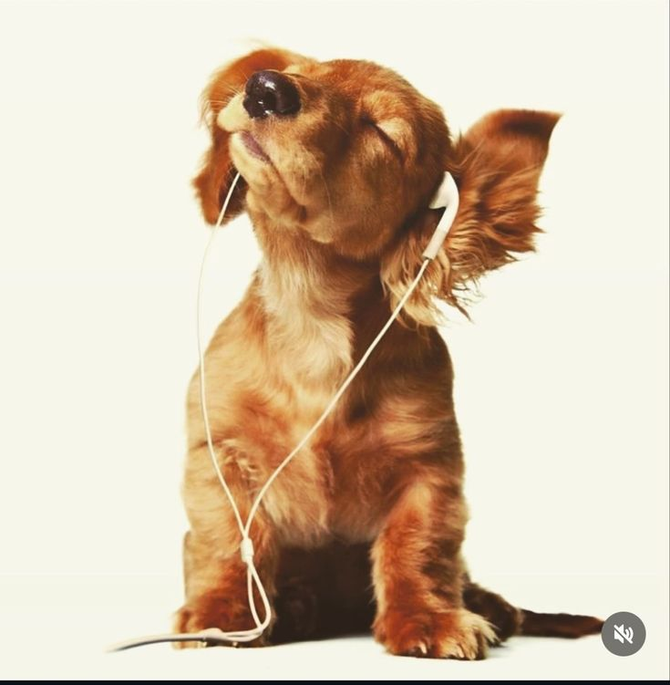
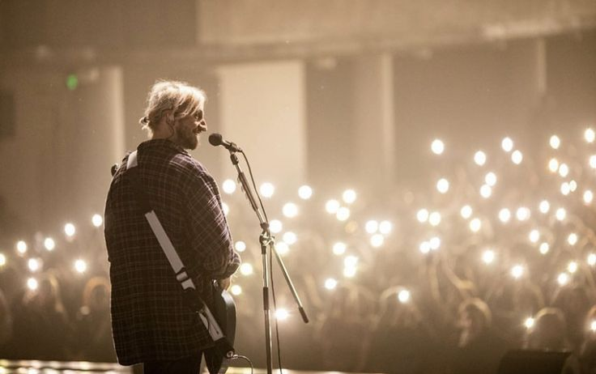
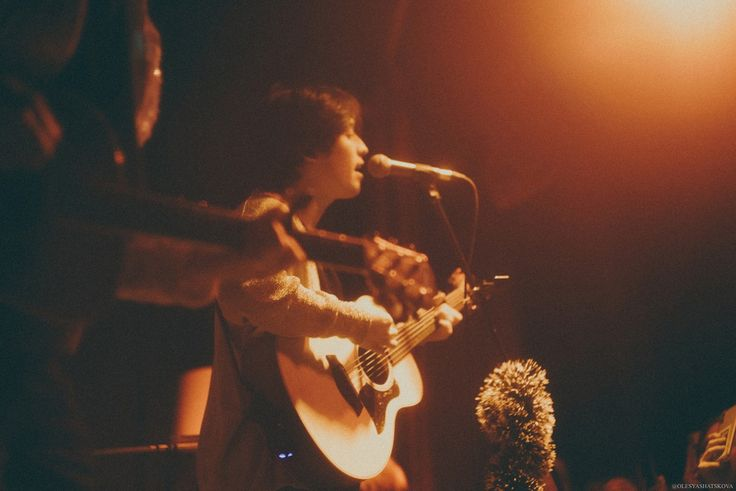

Меня очень цепляют бунтарские и философские темы их песен. Очень необычно для к-поп индустрии - это то, что они пишут всё сами, а значит, им есть о чём сказать миру. А это бесценно и очень круто!
Любимые песни:

Нервы отражают все состояния моей души. Их песни всегда помогали выплеснуть эмоции или наоборот, прочувствовать их.
Любимые песни:

Просто самый обыкновенный парень с гитарой, который поет о жизни и о том, что он чувствует. Любимая шутка его фанатов, чтобы он не шел на терапию и не дай бог не перестал петь о бывшей)
Любимые песни: